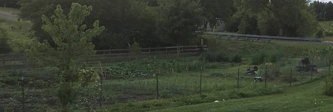
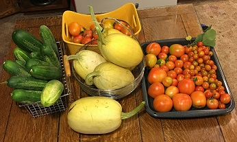

Farm to Table
Garden prep and recovery
There is a lot of work that goes into the garden. Early spring we prepare it for tilling under the cover crops. We spread the bedding from the chicken coop and the llama fertilizer (since the poop in one spot) out on the garden to be tilled in. Once the weather is ready we plan out where everything will be including building any trellace that is needed. During the growing season we have to keep the area watered, free of weeds and also utilize Diatomaceous earth to keep the bugs away. Once the season is over we have to clean out the garden bed and plant a cover crop for the winter. A lot of work but it is all worth it!
Preserving summer crops
Durring the summer months we put a big focus on our garden for fresh produce and ensure that any extra gets stored for the winter by canning and dehydrating.
Some of the items that we typically prepare
- jellies of various types (strawberry, grape, peach vanilla, blackberry)
- specialty jellies (blackberry and peach jalapeno, pear sauce, apple sauce, apple butter, pear butter)
- canned pickles (dill pickles,bread and butter pickles, bread and butter jalapeno, relish)
- canned veggies and fruit (green beans, pears, peaches, apples)
- dehydrated corn, veggies and fruits
- canned salsa
- sunflower seeds
- onions and garlic
- carrots
Some of the items we enjoy in season
- potatoes
- cantaloupe
- watermellon
- spagetti squash
- honeydew
- rasberries